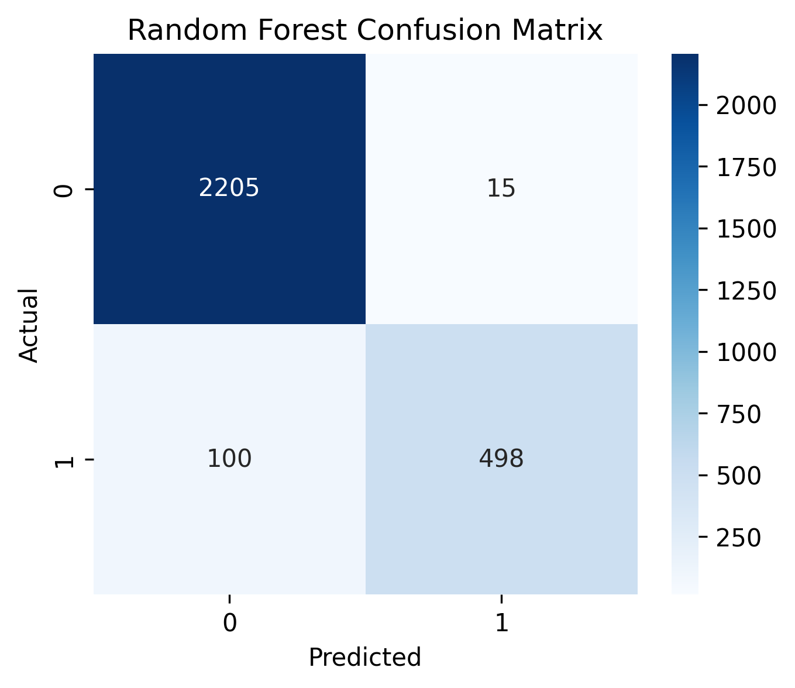

Predicting defects in a continuous factory process, before they leave the line.
A sensor-driven classification model that flags high-risk output on a real continuous manufacturing line — then traces each flag back to the machine readings most responsible, using feature-importance root cause analysis.
A continuous production line generates more sensor data than any operator can watch in real time.
The dataset comes from a real continuous manufacturing process, logging machine speed, temperature, pressure and amperage across multiple stages. Somewhere in those 116 signals is the early warning for the next defective batch — the goal is finding it before the batch ships.
Why it's hard
Defects are the minority class — only ~20% of output falls into the high-risk band once the continuous target measurement is thresholded into "defect risk / not." A model that just predicts "fine" most of the time still looks deceptively accurate.
What "solved" looks like
A model that catches high-risk output reliably, and — just as important for a factory floor — points to *which* sensor readings are driving that risk, so engineers know what to physically check.
From raw log file to a labeled, model-ready dataset.
Cleaning & labeling
- Dropped the raw timestamp column; kept only numeric process signals
- Removed rows with missing target measurements
- Converted the continuous output measurement into a binary label — top 20% (80th percentile) flagged as high defect risk
Feature engineering
- Renamed key raw sensor columns to readable names — SpeedTempAmps
- Derived a new Thermal_Load feature (Temp × Amps) as a physically meaningful stress signal
- 80/20 train-test split, stratified by the resulting defect-risk label
Random Forest edged out a single Decision Tree — and generalized more reliably.
Both models were trained on the same 80/20 split and evaluated on held-out data.

Which sensors actually drive defect risk?
Feature importances from the Random Forest rank every one of the 116 signals by how much it contributed to the model's decisions. The top ten point straight at Stage 1 output measurements and Combiner Operation temperatures — a concrete list for engineers to go check on the floor.
Explore the root cause dashboard directly.
Built in Tableau from the same feature-importance and process data — filter by stage, machine, or measurement to see where defect risk concentrates.